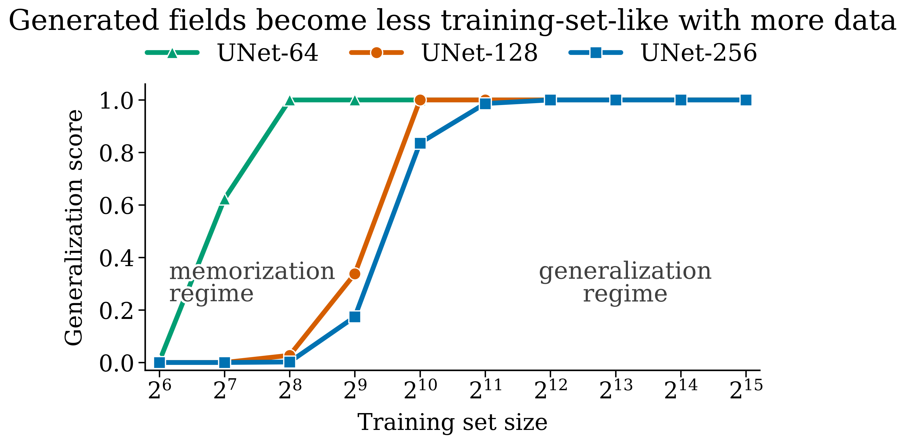
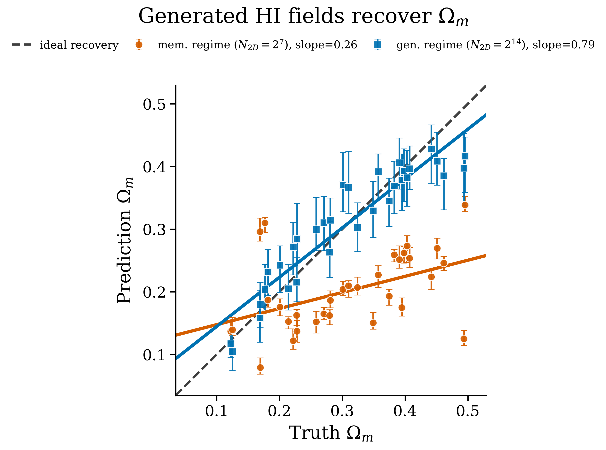
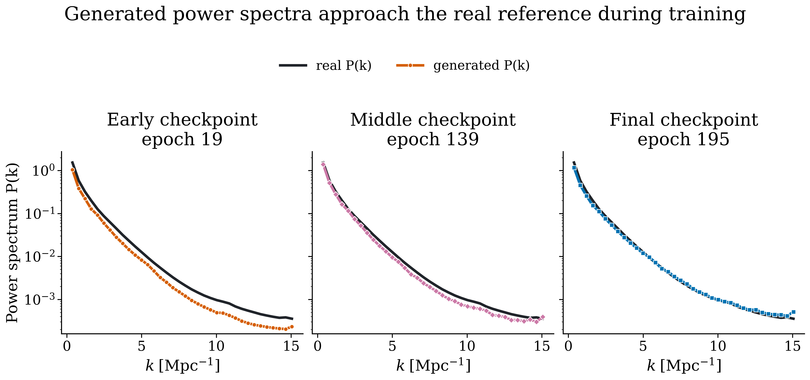

When does a diffusion model stop memorizing cosmological fields?
A generative model for scientific simulation has to do more than make plausible pictures. For cosmology, the useful question is whether the model has learned a distribution of fields, or whether it is quietly returning near-copies of the maps it saw during training.
The problem
Diffusion models are attractive as fast priors for cosmological fields: sample a map, condition it on physical parameters, and use it downstream in inference. But that only works if the generated maps are new, statistically faithful, and sensitive to the requested cosmology. Visual realism is not enough.
I studied this on CAMELS IllustrisTNG neutral-hydrogen maps. Each map is a
128 × 128 slice of an HI field, and the model is a 2D U-Net diffusion
model trained across a sweep of training-set sizes, from
N2D = 26 to 215 fields.
For the conditional runs, the model receives six CAMELS parameters:
Ωm, σ8, ASN1, AAGN1,
ASN2, and AAGN2.
Measuring copying
For each generated map xj, I compare it with every training map
yi and keep the closest match:
sj = maxi sim(xj, yi). A high value
means the generated map is nearly a copy of one training map. I measure this in
pixel space and in two feature spaces, PCA and SSCD, so the conclusion is not tied
to one image metric.
The generalization score is the fraction of generated maps that are not unusually
close to the training set. In the poster I use
GL = Pr[sj < τ], where τ is the 95th percentile
of train-vs-train nearest-neighbor similarity in PCA space. Roughly:
GL ≈ 0 means copying, and GL ≈ 1 means the samples
are no closer to the training set than real training maps are to each other.

The transition
The main result is a sharp memorization-to-generalization transition. With little data, generated fields closely match individual training slices. With more data, the same model family produces fields that are much less training-set-like while retaining the visual and statistical structure of real HI maps.
I would not read the exact threshold as a universal constant. It depends on the architecture, feature metric, training budget, and dataset. The useful point is more practical: nearest-neighbor checks can tell whether a generative emulator is in the copying regime before it is used for inference.
Conditioning is a separate test
Novel samples are still not enough. If I ask the conditional model for a different
cosmology, the generated fields should move with that request. To test this, I pass
generated maps through a frozen VGG16-feature encoder with an MLP regression head
and recover θrec from each generated field. On real held-out
HI maps, this encoder reaches R2 = 0.91 for
Ωm, so I focus the cleanest calibration plot on that parameter.
The high-data regime tracks the requested matter density much better than the memorization regime. The important detail is the error bars: small seed-to-seed scatter is not automatically good. In the memorization regime, the bars can look tight while the median is centered on the wrong value. Past the transition, the scatter is a more honest reflection of uncertainty around the requested cosmology.

Physical fidelity
I also check ordinary summary statistics. The one-point PDF asks whether the pixel
values have the right distribution; the power spectrum P(k) asks whether
the field has the right structure across spatial scales. In a full-data U-Net-128
run, low-k large-scale power matches first, while high-k
small-scale power catches up later in training.

What I take from it
The transition from memorization to generalization, known in natural-image settings, also appears in CAMELS HI fields. For scientific simulation, that transition is not just a model-quality detail. It changes how much we should trust the uncertainty bars and whether a conditional generator is actually responding to the physical parameters we ask for.
The practical lesson is simple: before using a diffusion model as a cosmological emulator, check novelty, calibration, and physical summary statistics separately. A model can match a power spectrum and still be biased as a conditional generator. The diagnostics here are meant to catch that failure mode early.
Code and poster materials: github.com/JiamingPan/diffusion-models-simulation-data. Questions or suggestions: jiamingp@umich.edu.